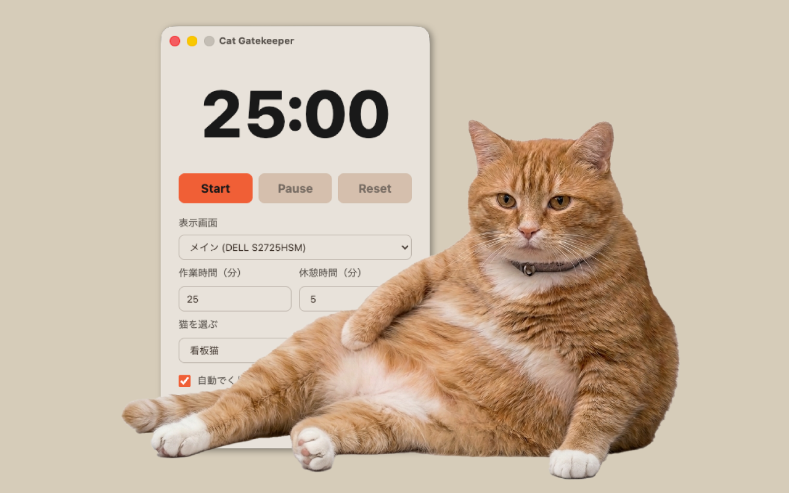
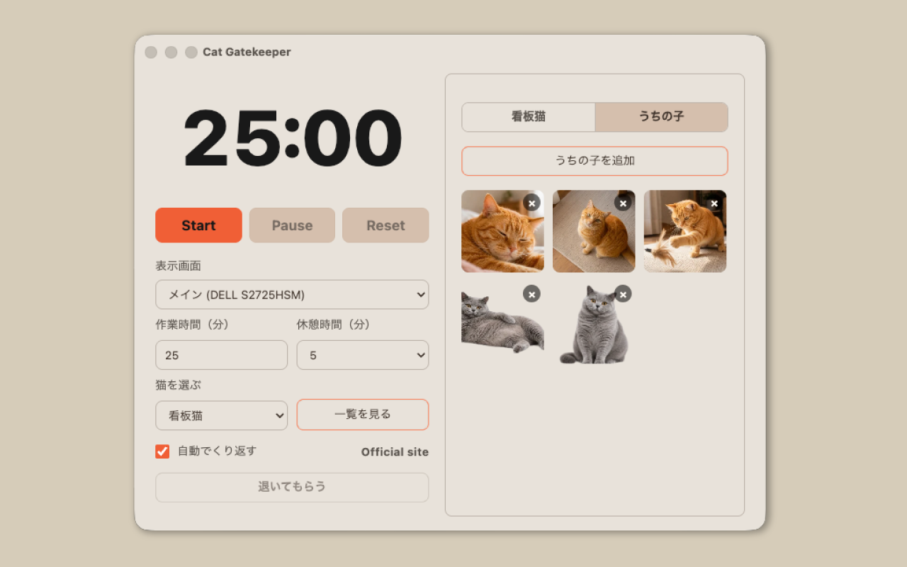
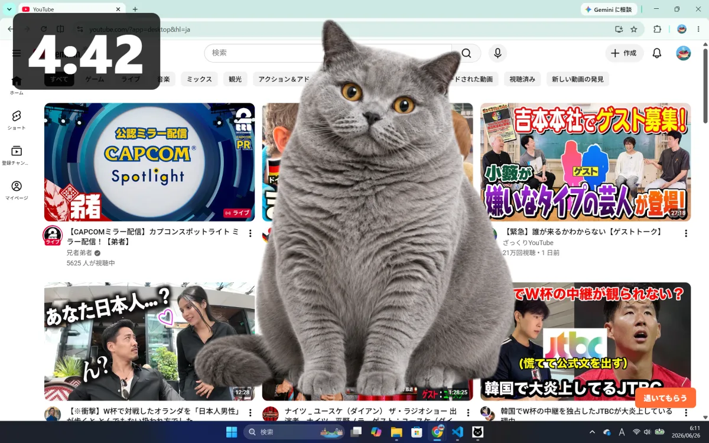
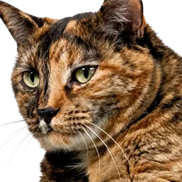
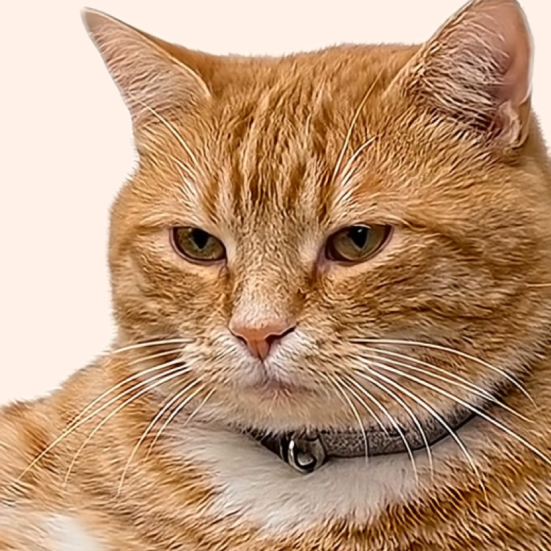

2026年8月5日：Ver. 1.3.9（Mac & Win）
• 3匹目の看板猫を追加しました。
• 「うちの子」に「虹」のモーションを追加しました。
• 看板猫のプレビューを改善しました。
• 「みんなの子」で、まだ会っていない猫を優先表示するようにしました。
• 表示やデータ保存に関する不具合を修正し、安定性を向上しました。

WHAT'S NEW
• 3匹目の看板猫を追加しました。
• 「うちの子」に「虹」のモーションを追加しました。
• 看板猫のプレビューを改善しました。
• 「みんなの子」で、まだ会っていない猫を優先表示するようにしました。
• 表示やデータ保存に関する不具合を修正し、安定性を向上しました。
• Intel搭載Macに対応しました。
• 新しいモーション「宇宙猫」を追加しました。
• モーションを再生して確認できるボタンを追加しました。
• 「みんなの子」に新しく追加された猫が早く登場するようにしました。
• 看板猫に新しい猫を追加しました。
• 「みんなの子」が仲間入りしました。世界中の猫ちゃんが休憩を知らせてくれます。
• メニューバー常駐機能を追加しました。ウィンドウを閉じてもメニューバーから使えます。
• 好きな写真を追加できるようになりました
• 追加した写真の背景を切り抜けるようになりました
• モーション機能を追加しました
• メニュー画面の表示や動作を改善しました
• 休憩中にDockのアイコン表示が不安定になることがある問題を修正しました（Mac）
• カウント停止中の終了後、メニューが表示されないことがある問題を修正しました（Mac）
Cat Gatekeeper DesktopをWindows版・Mac版の両方でリリースしました。
Cat Gatekeeperの公式サイトを公開しました。
FEATURES
休憩時間になると、猫があらわれて愛らしいモーションであなたの作業を強制ストップ。お気に入り写真の追加や背景切り抜きで、理想の「お邪魔シチュエーション」も作れます。
休憩時間になると、デスクトップに現れます。

好きな写真を「うちの子」として登録できます。

写真の背景を切り抜いて、画面になじむように表示できます。
追加した写真に動きをつけて、休憩中に表示できます。
New Cats


Which one?
HOW TO
作業時間と休憩時間を設定します。
タイマーは最小化したまま
いつもの作業を進めます。
時間が来たら
猫が現れて休憩を知らせます。
PRIVACY
Q&A
別のアプリです。ブラウザ拡張版はブラウザ内のSNSサイト向け、デスクトップ版はPC上で使うタイマー型のアプリです。ブラウザ以外の作業にも使えます。
macOS版とWindows版で使えます。
メニュー画面で、猫が現れるまでの時間と休憩時間を変更できます。
作業時間と休憩時間を設定してから、カウントをスタートしてください。カウントが0になり休憩時間に入ると、猫が画面にあらわれます。
タイマーなどの基本機能は、インターネット接続なしで使えます。追加コンテンツの取得や公式サイトの表示には、インターネット接続が必要です。
アプリのメニュー、または猫が登場した画面の右下に出る「退いてもらう」ボタンから消せます。
「最高の邪魔者」になってもらうべく、AIの力を借りて一匹ずつ調整を重ねて生み出した理想の猫たちになります。実在の猫ではありませんが、可愛さには自信があります。ぜひ、デスクの門番として可愛がってあげてください。
紹介や感想の投稿で、Cat Gatekeeperの画面を載せるのは大歓迎です。画像・動画素材そのものの利用や再配布はご遠慮ください。
自動更新がオフになっている、またはストア側の反映に時間がかかっている可能性があります。各ストアでCat Gatekeeperのページを開き、最新版へ更新できるか確認してください。
今後のアップデートで追加予定です。
FOLLOW
最新情報や開発の裏側はXで発信中！
@konekone2026 をフォローSupport